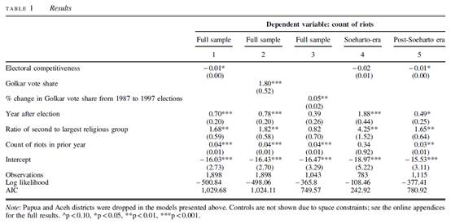
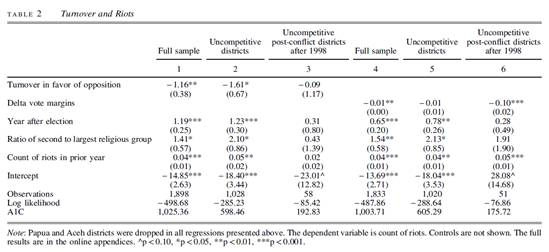

民主转型中的政治竞争与族群骚乱：来自印度尼西亚的启示
收录于合集
#民主与民主化 34 个
#比较政治学 121 个
#国家建构与国家发展 70 个

文献来源 ：” Risa J. Toha," Political Competition and Ethnic Riots in Democratic Transition: A Lesson from Indonesia”， British Journal of Political Science , Volume.47, Issue 3 (July 2017), pp.631-651
作者简介： Risa J.Toha,耶鲁-新加坡国立大学学院(Yale-NUS College)政治学系助理教授，加利福尼亚大学洛杉矶分校(UCLA)政治学博士，专攻比较政治，研究兴趣包括族群政治、发展的政治经济学和政治暴力等。个人介绍见https://www.yale- nus.edu.sg/about/faculty/risa-j-toha/
传统观点认识到政治转型时期群际冲突的盛行。但是，对于族群骚乱的普遍解释是以成熟民主国家中的冲突为基础的，忽视了民主转型期的政治动态。利用1990年到2005年印度尼西亚的地区数据，本文认为骚乱往往发生在选举竞争程度低的族群分化地区，因为首次民主选举的非竞争性意味着持续的政权壁垒和地方性政治排斥。骚乱经常紧随非竞争性选举而发生，而在选举更具竞争性、反对派候选人获得选举胜利之后而消散。
一、理论
在1989年到2013年间世界各地发生的408起社群冲突（communal conflicts）中，爆发于半民主国家（anocracies）、民主国家和专制国家中的分别是304起、70起和25起。然而，以往我们对于族群骚乱(ethnic riots)的认知大多源于研究成熟的民主国家中的冲突：印度的印度教徒-穆斯林骚乱(Hindu-Muslim riots)、美国的种族骚乱(race riots)以及法国、德国、英国的反移民暴动(anti-migrant riots)。和新兴的民主国家不同，成熟的民主国家没有面临与之相似的政治不确定性、脆弱的政治制度和日益高涨的分配需求。因此，将这些差异考虑其中并提炼一种新的解释便是十分必要的。
在解释印度的印度教-穆斯林骚乱时，威尔金森(Steven Wilkinson)强调：在地方精英决定煽动抑或平息骚乱的选择中，选举竞争（electoral competition）具有重要影响。出于对激烈竞争的预判，地方精英允许骚乱的发展以防目标选民支持竞争对手。但是，在精英依赖少数族裔选民的情形中，暴力往往很快就被镇压了。换句话说，族群骚乱是一种激活投票者的族群忠诚和防止他们支持非同族候选人的竞选工具。它们被前瞻性和战略性地用于动员支持者。
但是，几十年来印度一直是一个成熟的民主国家。尽管自由民主政体和其他政体存在相似性，然而新兴民主国家具有更大的不确定性和更多的分配需求。例如，考虑到脆弱的安全保障能力，在实行民主的最初几年里，稳定时期应受惩罚的暴力行为可能逍遥法外。面对国家低效的制度安排，新兴民主国家中的个人可能将暴力视作政治参与的另外一种形式。虽然分配压力同样存在于成熟的民主国家，但是它在新兴民主国家表现得特别强大——因为在民主化的过程中，即将离任的精英设法保障他们的利益，同时遭受排斥的人们试图获取权力。因此，新兴民主国家中最初的选举可能对未来的政治格局仅有象征性的意义和作用，同时会对暴力产生不同程度的影响。
莱特（Joseph Wright）发现，民主开始时低水平的政治竞争预示着政治不稳定和政权崩溃。伴随着低水平政治竞争的新兴民主国家更可能发生公民冲突，因为遭受排斥的群体会设法颠覆政权。此观点中隐含的是（1）政治排斥（political exclusion）作为一种潜在机制的作用和（2）新兴民主国家中低水平的政治竞争是延续性排斥（continued exclusion）的信号。它的言外之意是地方上的冲突会在政治排斥程度高的地区爆发。
二、假设
作者认为转型中的印度尼西亚的骚乱是由族群分化地区（ethnically divided areas）的低度选举竞争引起的。在一次令人失望的选举之后，不满的精英通过替代性网络（在族群分化地区往往沿着族群界限组织而成）以及引发暴力来支持他们的生存，并为将来融入政权做好准备。在反对党力量薄弱、政治集团只有依附于威权政体才能在地方层面上实质存在的转型国家中，族群成了地方精英容易动员的资源。非竞争性会侵害所有遭受排斥的精英，但是只有当这个群体足够大时才有利于地方精英在族群中重塑这种不满。即使政治排斥沿着政党界限发生，对政权壁垒（regime entrenchment）的不满却以族群的面目表现出来并在分化地区产生族群骚乱。对族群的政治排斥制造了怨恨并刺激它们去斗争。
作者建立了如下假设：
假设1：低度选举竞争的地区比其他地区遭受更多的骚乱。
假设2：与前政权相联系的政党所控制的地区比该党未控制的其他地区遭受更多的骚乱。
假设3：暴力更可能发生在选举之后，而非之前。
假设4a：经历过骚乱并且实现过选举转向的地区会出现暴力的减少。
假设4b：经历过骚乱并且选举竞争随着时间增大的地区会出现暴力的减少。
假设5：民主转型之前，选举的竞争性对骚乱没有影响。
假设6a：族群高度分化的地区比同质性地区更容易产生暴力。
假设6b：少数族群占比接近百分之五十的地区比少数族群占比非常少的地区更可能产生暴力。
假设6c：少数族群人口占比更大的地区比少数族群人口占比更少的地区具有更多的暴力。
三、检验
为了检验上述假设，文章分析了从1990年到2005年印度尼西亚地区层级（districts and municipalities）的不平衡的面板数据，分析单位是地区-年（district- year）。这个数据集包括了5371个地区-年。作者选择这一层次集合的依据是政治竞争的舞台：省一级的分析将会很有意思，但是它将忽视跨地区发生的许多变化；而街道或者村庄层次的集合将无法识别存在于县市级的竞争动力。鉴于分权后自治权下放给地区，从地区层次理解权力竞争如何与暴力相联系尤为重要。
因变量族群骚乱将以一个地区-年所报告的骚乱总数来衡量。作者也对骚乱死亡数（riots death）进行编码，显示一个地区- 年中每一次骚乱的伤亡水平，同时构建了作为暴力严重程度的指标。
作者用来衡量选举竞争性的主要变量是，在地区最近的议会选举中第一名和第二名获胜者之间的选票差距。第二个指标是在地区最近的选举中专业集团党的选票份额（Golkar Vote Share）。第三个指标则显示在1998年苏哈托下台前的十年间专业集团党人气的变化。它衡量了1987年到1997年专业集团党选票份额的变化。正值意味着专业集团党在1987年的表现明显好于1997年，负值则表示相反的含义。
为了检验反对派候选人的当选是否会减少后冲突地区（post-conflictareas）的骚乱，作者构造了一个二元变量（dichotomous variable）来显示支持非专业集团党候选人的选举转向（electoral turnover in favor of non-Golkar candidates）。同时用另外一个变量来衡量选举竞争性的变化：德尔塔票数差距的差分值（Delta Vote Margins）。这一变量是根据最近一次选举分别与以往每次选举的选票差距的不同计算而成。该变量的正值意味着从倒数第二次选举到最近一次选举的竞争性的增加。
至于在时间顺序（temporal order）方面，作者考虑到自身观点的逻辑（选举竞争性的缺失意味着政治排斥在新政府中的延续，刺激着有抱负的精英去动员他们的同族群者，这意味着骚乱发生于非竞争性选举之后，而不是竞争性选举之前），创建了一个虚拟变量（dummy variables）来显示在选举年、选举的前一年和后一年中，观察值是否下降。这些变量有助于洞察骚乱爆发的时间与最近一次选举的亲密性。
以往的实证研究通常使用民族语言多样性指数（the Ethno Linguistic Fractionalization）来衡量族群差异。作者则利用按照部落和宗教分类的地区人口数据来呈现族群多样性这一变量。考虑到多元社会中的协调成本以及群体的易动员性，作者也测量了群体平衡性：该地区第二大宗教群体的份额与最大宗教群体的份额之间的比例。比例越接近1，两个群体越势均力敌。另一个用来分析相同概念的替代性指标是：第二大宗教群体的比例与50%的距离。距离越小，两大群体越势均力敌。


四、结论
利用地区（县市）一级的数据，作者发现族群骚乱往往发生在民主化初期选举竞争程度低的族群分化地区，因为竞争不足意味着政权壁垒在地方层面的延续，尽管国家层面已开启民主化。新兴民主国家最初的非竞争性选举预示着政权壁垒、三心二意的改革以及对反对派候选人的持续性排斥。因此，非竞争性选举（而不是在成熟民主国家中的竞争性选举）更有可能在族群分化地区造成骚乱。甚至在控制了人均国内生产总值、族群多样性、先前的暴力水平等地方性特殊因素，苏哈托新秩序政权 （链接：改变威权主义——对苏哈托“新秩序”的案例研究） 的终结等国家因素，以及一个地区是否位于外围岛屿或者爪哇等地理因素之后，上述效应依然成立。实质来看，选举竞争性每增加1%则预示着骚乱率下降1%。专业集团党在前一次的议会选举中每增加1%的投票份额，该地区的骚乱将增加六次。考虑到这种骚乱相对较少但是非常极端，这一影响值得注意。
此外，作者发现骚乱往往发生在非竞争性选举之后，而没有像印度的印度教- 穆斯林骚乱那样发生在竞争性选举之前。数据结果也显示，支持非专业集团党候选人的选举转向以及一次次选举中竞争性的增加能够减少骚乱。一个地区的骚乱随着选举竞争性的增加而减少。这些结果表明，面对令人失望的选举结果无法满足地方精英融入政权的要求，骚乱在转型中的印度尼西亚是一种替代性的政治参与的形式。一旦这些要求得到满足，暴力就会减少。
**
**
政文观止编辑部
编译不易，